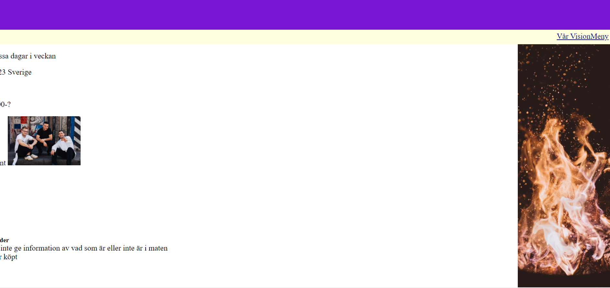
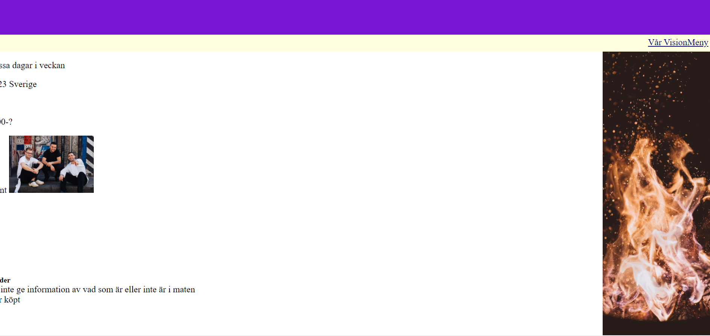

| Vecka | På lektionen | Utanför lektionen |
| 47 |
Kom på ett tema och rita skiss för de tre sidorna, Om detta blir klart kan man börja skriva html-kod för index.
|
Fortsätt/börja på html-kod för index (om man vill)
|
| 48 |
Skriv Html-kod för index och börja skriva t.ex grid template areas och enkel boxmodell
|
Fortsätt med css
|
| 49 |
Skriv mer css och bröja på html-kod för meny och vår vision. Kopiera de gemensamma elementen som är klara till meny och vår visions del av css-dokumentet
|
Börja utforma de icke-gemensamma elementen i css för meny och vår vision.
|
| 50 |
Utforma de icke-gemensamma elementen i css för meny och vår vision.
|
Testning av kontraster och vaildators.
|
| 51 |
Finslip av detaljer, Testning av kompabilitet med olika sökmotorer
|
Finslip
|

 
